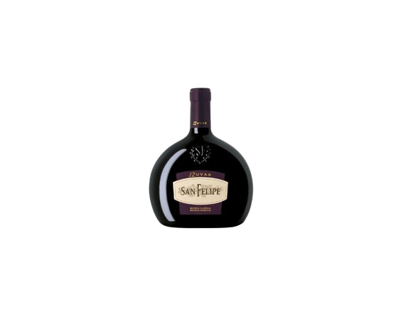

Experiência La Rural
Na Vinícola La Rural, com cada taça, saboreamos a história de Mendoza. Desde 1885, este vinhedo tem sido testemunha do tempo, cultivando uvas de qualidade excepcional que refletem o terroir único da região. Assim como uma viagem no tempo, nossa degustação te transportará através das décadas, descobrindo a essência de um legado vinícola incomparável.
Como será esta degustação?
Esta degustação contará com 5 espumantes desta vinícola, que serão:


SAN FELIPE TINTO
Este assemblage tinto argentino é único. Primeiramente, o Cabernet Sauvignon é envelhecido em barris de carvalho americano de primeiro uso, por doze meses.

SAN FELIPE 12 UVAS
Rubi ameixa brilhante. Aroma frutado, onde destaca-se a fruta vermelha fresca, com toques de defumado e baunilha. No paladar, surpreende pela suavidade e equilíbrio entre acidez e taninos macios.

SAN FELIPE BLANCO 2015
Amarelo pálido com tons esverdeados. Notas florais e frutas brancas, cítricas e tropicais equilibram acidez e suavidade.

SAN FELIPE ROSÉ DE MALBEC
Rosa cristalino com tons de cereja. Frutas vermelhas frescas (guinda, morango) são combinadas com flores e especiarias. Excelente equilíbrio entre acidez e estrutura.

EXTRA BRUT 2015
Amarelo seco, com reflexos brilhantes. Aroma de frutas brancas maduras e notas tostadas. Cremoso, de perfil fresco.
Localização do evento
A degustação será na loja da Antonia Vinhos, localizada na Avenida Valparaíso número 4250, loja número 3.